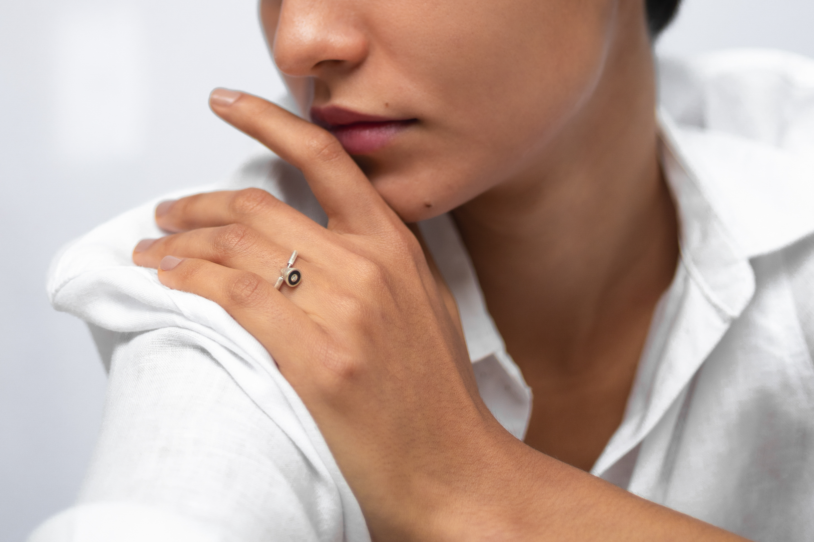
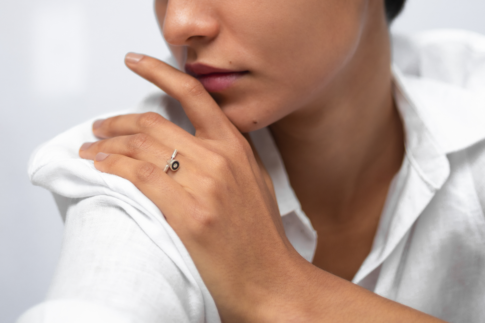

Olá! Prazer, sou a Larissa :)
Tenho 23 anos, três gatinhos, nascida em São Paulo,
capital, mas criada no interior, em Mogi Mirim. Apesar
de
formada em Relações Internacionais e concluindo
um
mestrado na mesma área, há 2 anos encontrei na
Fotografia a minha paixão.